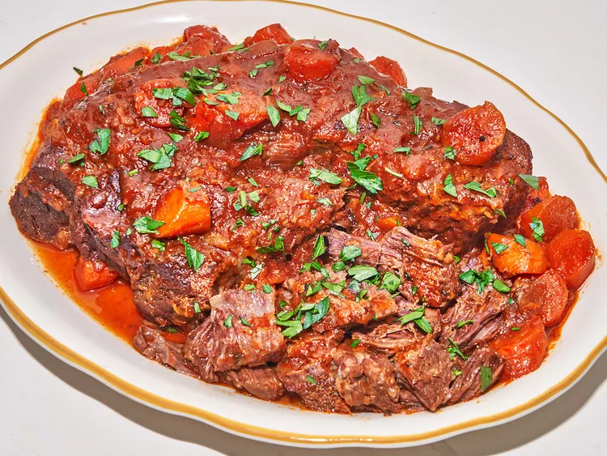

Easy Pot Roast
Back to Recipe List

Description
This easy pot roast recipe is a keeper. Seared in a Dutch oven, then baked
in the oven with vegetables, it takes a few hours, but is so worth the
wait.
Ingredients
- 4 pounds chuck roast
- 4 teaspoons kosher salt, divided
- 2 ½ teaspoons pepper, divided
- 2 teaspoons garlic powder
- 2 tablespoons oil
- 1 onion, chopped
- 2 stalks celery, chopped
- 4 carrots, peeled and chopped
- 2 tablespoons butter
- 2 ½ tablespoons all-purpose flour
- 2 cups water
-
2 teaspoons beef bouillon paste, (such as Better than Bouillon®), or 2
bouillon cubes
- 1 ½ tablespoons tomato paste
- 1 tablespoon Worcestershire sauce
Steps
-
Preheat the oven to 325 degrees F (165 degrees C). Season roast on both
sides with 1 tablespoon salt, 2 teaspoons pepper, and garlic powder.
-
Heat oil in a large Dutch oven over high heat. When oil begins to
shimmer, place roast in pot and let cook, undisturbed, until browned,
about 4 minutes. Flip and repeat on the other side until browned. Brown
on all sides, remove roast from pot, and set aside.
-
Add onion, celery, and carrots to drippings in the pan. Season with
remaining salt and pepper and cook, stirring often, until onion begins
to soften. Add butter to pot and allow it to melt. Add flour and cook,
stirring constantly, about 1 minute. Add remaining ingredients and stir,
using a spoon to scrape browned bits from bottom of pot.
-
Return roast to pan, along with any accumulated juices. Bring to a
simmer, cover, and remove from heat.
-
Bake pot roast in the preheated oven and cook until roast is tender,
about 2 1/2 hours. Allow to rest 10 minutes before shredding and serving
with vegetables and gravy.